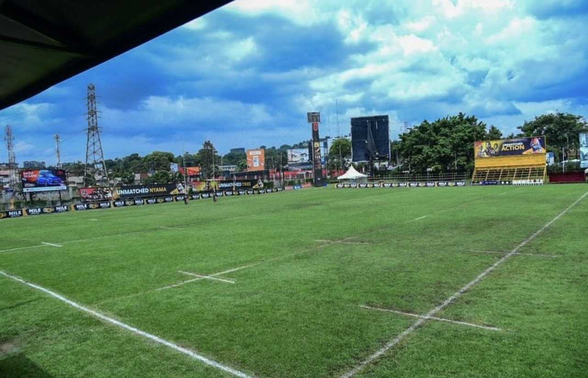
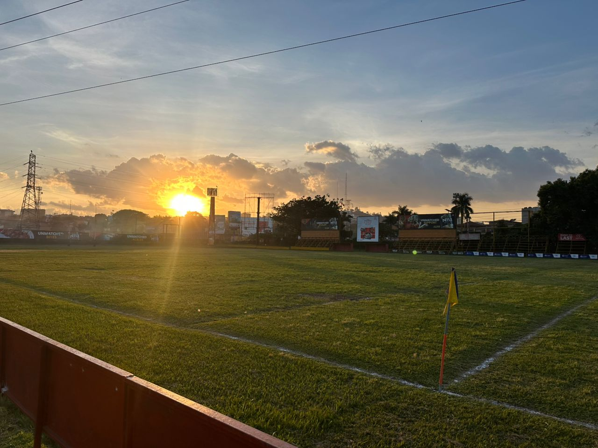
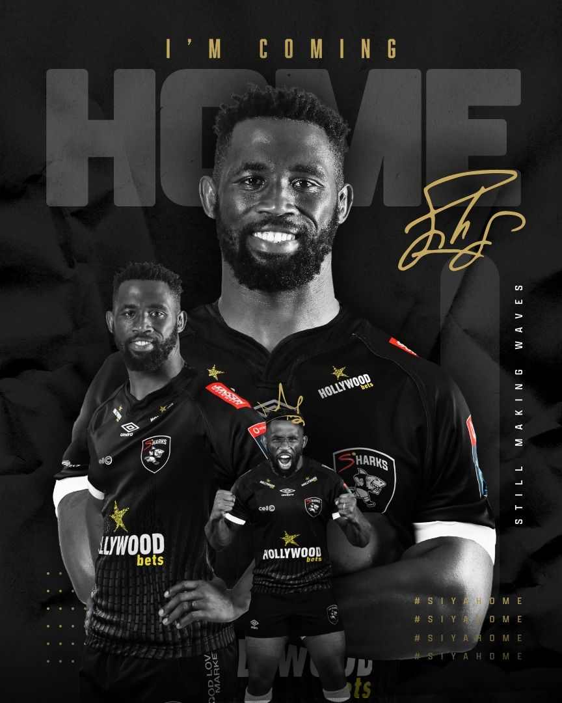

WELCOME TO KYADONDO RUGBY CLUB WHERE TALENT MEETS PERFECTION



Background
Kyadondo Rugby club is a sports club that was officially opened in 2000 and since that time it became a major hub for Ugandan Rugby.
Kyadondo is a home to six rugby teams ;Platinum Credit Heathens, Toyota Buffaloes, Thunderbirds, Stallions, Bisons and Peacocks.
Kyadondo is a rugby union ground in kampala with facilities of a main ground, training pitch and a club house.It is located along Jinja road in lugogo opposite former shoprite.
Kyadondo training pitch
This is where it all begins...the hardwork leading to the great results.
Kyadondo main grounds
This gives the generaal beauty of KYADONDO.The overall appearance that make it an outstanding hub for rugby in Kampala
Kyadondo club house
This is where most funs sit inorder to enjoy the the great view.One can even for a drink or two as they enjoy the different matches that take place
Our Vision
To become the premier,sustainable rugby institution in Uganda.To nurture talent and provide life-changing opportunities.To elevate the profile of the club and expand its reach.
Our Mission
To develop talents from grassroots elite levels.To foster discipline and impact lives of different people.To strengthen the intitutions future through strategic growth,